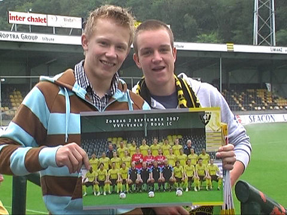

|
VVV
- Roda JC (3-5) 2 september 2007
|
De bezoekers van De Koel worden verwelkomd door joekskapel de Boereraod
uit
Tegelen.

Twee jeugdige fans met een poster van VVV die in opgevouwen toestand een
"klepper" vormt.
De catering in Venlo is als vanouds goed. Alleen het stadionbier is van een
belabberde kwaliteit en bovendien schandalig duur.
Foto JC.
De broertjes K. hebben weer een bobo-plek bemachtigd.
Vlaggetjesdag op oost-links.
Een prachtig doek in het sfeervak op oost-midden.
Het is altijd even wennen als de tegenstander in geel/zwart speelt.

Guess? Nou vooruit dan....C80 misschien?
Al na een paar minuten krijgt Oper een superkans op 0-1. Zijn schot stuit echter
op
doelman Begois.
Op een assist van Matondo scoort Oper even later toch 0-1, (12').
Feest bij de ruim 500 Rodasupporters in het gastenvak.
De lange zijde onoverdekt.
Altijd balen als je niet naar de wedstrijd mag kijken.
Kantelberg krijgt de bal diep aangespeeld door Amrabat en kan na een een
klutsbal
via Saeijs de bal binnenschieten...
... 1-1, (16'). Venlo is weer vrolijk.

Het "campione" wordt wel heel voorbarig aangeheven.
Sekou Cissé stond ook tussen het publiek evenals Vincent Lachambre.
VVV komt zowaar op voorsprong door een goal van Linssen, (23'). En alweer is
Amrabat de aangever.
Het wordt nog gekker: Amrabat kopt 3-1 binnen, (30').

Na het "10-10-10" gaat zelfs even de wave door het stadion.
Op de achtergrond een verslagen Begois nadat de excellerende Matondo Roda
terugbrengt in de wedstrijd met een prachtige lob: 3-2, (41').
Al snel in de tweede helft komt Roda op gelijke hoogte nadat Oper uit een
scrimmage voor het doel 3-3 scoort, (50').
VVV stort in. Matondo schuift de bal achter begois: 3-4, (60').
Dit levert een leuk dansje op van Tioté, Matondo en Lamah. Oper beheerst dit
ritueel niet en loopt er lachend langs.
In het laatste kwartier van de wedstrijd gaat VVV flink in het offensief en
creëert
zich daarmee een behoorlijk aantal goede kansen. Toch is het Roda dat de
wedstrijd definitief beslist. Invaller Van Tornhout die eerst tegen Begois
aanschiet
kan de teruggesprongen bal alsnog inschieten: 3-5, (85').
Na een 3-1 voorsprong toch nog met 3-5 verliezen is hard.
De vreugde bij de Rodasupporters is er niet minder om.
Humba humba tetereeee, nu ook in de uitwedstrijden...
Terwijl de spelers nog uitlopen...
... vertrekken de 11 supportersbussen van Roda.
© Koempels Pleasure Dome
|